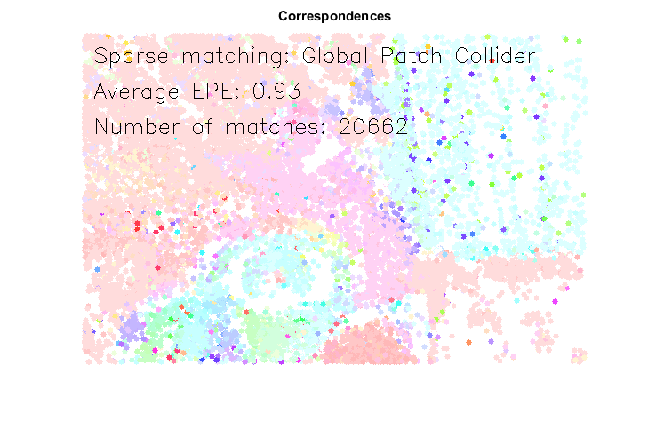
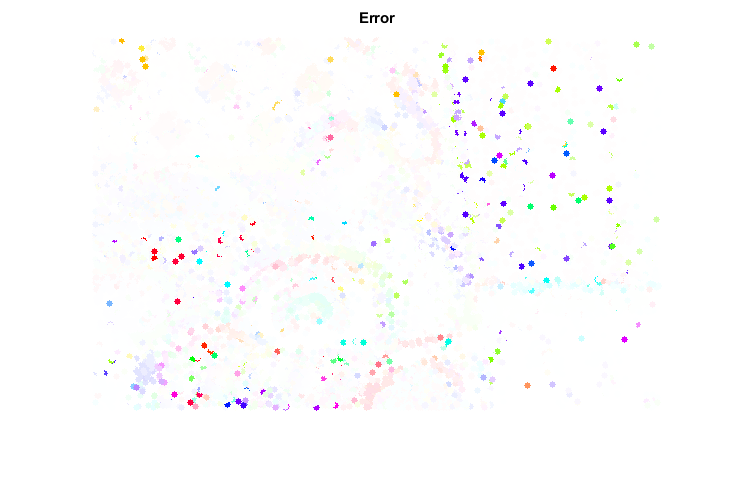
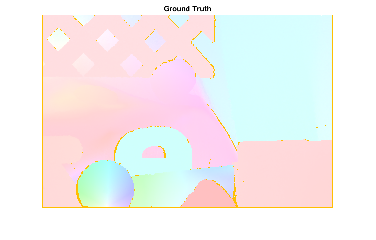

Global Patch Collider Demo
This sample trains the forest for the Global Patch Collider and stores output to the file "forest.yml.gz".
It then finds correspondences between two images using Global Patch Collider and calculates error using provided ground truth flow.
It will look for the file named "forest.yml.gz" with a learned forest. You can obtain the "forest.yml.gz" either by manually training it or by downloading one of the files trained on some publicly available dataset from here: https://drive.google.com/open?id=0B7Hb8cfuzrIIZDFscXVYd0NBNFU
Sources:
Contents
1) Train
input training images
imgs1 = {
fullfile(mexopencv.root(), 'test', 'RubberWhale1.png')
};
imgs2 = {
fullfile(mexopencv.root(), 'test', 'RubberWhale2.png')
};
groundTruths = {
fullfile(mexopencv.root(), 'test', 'RubberWhale.flo')
};
assert(isequal(numel(imgs1), numel(imgs2), numel(groundTruths)));
if exist(groundTruths{1}, 'file') ~= 2
% attempt to download ground thruth flow from GitHub
disp('Downloading FLO...')
url = 'https://cdn.rawgit.com/opencv/opencv_extra/3.2.0/testdata/cv/optflow/RubberWhale.flo';
urlwrite(url, groundTruths{1});
endGlobal Patch Collider training paramters
params = {
'MaxTreeDepth',20, ... % Maximum tree depth to stop partitioning
'MinNumberOfSamples',3, ... % Minimum number of samples in the node to stop partitioning
'DescriptorType','DCT', ... % Descriptor type. Set to DCT for quality, WHT for speed
'PrintProgress',false % Set to false for quiet mode, set to true to print progress
};
forestDumpPath = fullfile(tempdir(), 'forest.yml.gz');train the forest for the Global Patch Collider and save it
if exist(forestDumpPath, 'file') ~= 2 gpc = cv.GPCForest(); tic gpc.train(imgs1, imgs2, groundTruths); toc gpc.save(forestDumpPath); end
2) Evaluate
test images
fromPath = imgs1{1};
toPath = imgs2{1};
gtPath = groundTruths{1};
from = imread(fromPath);
to = imread(toPath);
flo = cv.readOpticalFlow(gtPath);load pretrained forest
forest = cv.GPCForest(); assert(exist(forestDumpPath,'file') == 2, 'No file with a trained model'); forest.load(forestDumpPath);
find correspondences between two the images using GPC
tic corresp = forest.findCorrespondences(from, to, 'UseOpenCL',false); toc fprintf('Found %d matches\n', numel(corresp));
Elapsed time is 4.856060 seconds. Found 20848 matches
calculate error using provided ground truth flow
gtU = flo(:,:,1); gtV = flo(:,:,2); a = cat(1, corresp.first); b = cat(1, corresp.second); ind = sub2ind(size(gtU), a(:,2), a(:,1)); gtDisplacement = [gtU(ind) gtV(ind)]; c = a + gtDisplacement; % check for correct flow vector mask = all(isfinite(gtDisplacement) & (gtDisplacement < 1e9), 2); a = a(mask,:); b = b(mask,:); c = c(mask,:); err = mean(sqrt(sum((b - c).^2, 2))); fprintf('Average endpoint error = %f px.\n', err);
Average endpoint error = 0.929796 px.
display flows as color images
clr = getFlowColor(b - a); dispOut = zeros(size(from), 'single'); dispOut(:,:,3) = 1; dispOut = cv.circle(dispOut, a, 3, 'Colors',clr, 'Thickness','Filled'); dispOut = cv.cvtColor(dispOut, 'HSV2RGB'); clr = getFlowColor(b - c, false, 32); dispErr = zeros(size(from), 'single'); dispErr(:,:,3) = 1; dispErr = cv.circle(dispErr, a, 3, 'Colors',clr, 'Thickness','Filled'); dispErr = cv.cvtColor(dispErr, 'HSV2RGB'); dispGT = getFlowColor([gtU(:) gtV(:)]); dispGT = reshape(dispGT(:,1:3), [size(gtU) 3]); dispGT = cv.cvtColor(dispGT, 'HSV2RGB');
show results
opts = {'FontScale',0.8, 'Color','k', 'LineType','AA'};
str = 'Sparse matching: Global Patch Collider';
dispOut = cv.putText(dispOut, str, [20 40], opts{:});
str = sprintf('Average EPE: %.2f', err);
dispOut = cv.putText(dispOut, str, [20 80], opts{:});
str = sprintf('Number of matches: %d', nnz(mask));
dispOut = cv.putText(dispOut, str, [20 120], opts{:});
figure(1), imshow(dispOut), title('Correspondences')
figure(2), imshow(dispErr), title('Error')
figure(3), imshow(dispGT), title('Ground Truth')Helper function
function clr = getFlowColor(UV, logScale, scaleDown) if nargin < 2, logScale = true; end if nargin < 3, scaleDown = 5; end angle = (atan2(-UV(:,2), -UV(:,1)) + pi) * 180 / pi; angle(all(UV == 0, 2)) = 0; radius = sqrt(sum(UV.^2, 2)); if logScale radius = log(radius + 1); end radius = radius ./ scaleDown; radius = min(radius, 1); clr = [angle radius]; clr(:,3) = 1; clr(:,4) = 0; end